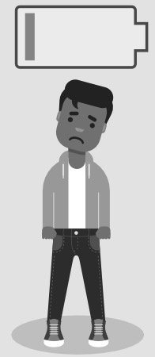

🎓 Mission : Prévention RPS
📚 Approfondissement : Les 6 facteurs de risques de Gollac
🎯 Compétence & Objectif
Module C9 : Prévenir les risques psychosociaux au travail.
Être capable de :
- Identifier les 3 types de RPS (stress, violences internes, violences externes)
- Reconnaître les 6 facteurs de risques (modèle de Gollac)
- Distinguer les conséquences sur la santé et sur l'entreprise
- Sélectionner une mesure de prévention adaptée
C2 Analyser
C3 Expliquer
C4 Proposer
20 questions
20 points
📝 Consignes
- Lire chaque situation attentivement
- Analyser l'image si elle est présente
- Sélectionner la bonne réponse parmi les propositions
- Justifier mentalement ton choix à partir du cours
- Valider ta progression jusqu'à la fin
- T'autoévaluer en cochant ce que tu maîtrises

Catégorie
La question va ici...
📝 Auto-évaluation
Avant de voir ton score final, coche les compétences que tu penses maîtriser :
C2 – Je sais identifier les 3 types de RPS (stress, violences internes/externes).
C2 – Je reconnais les 6 facteurs de risques de Gollac.
C3 – Je distingue burn-out et bore-out.
C3 – Je connais les obligations de l'employeur et le DUERP.
C4 – Je sais proposer une mesure de prévention adaptée.
🏁 Mission Terminée !
0
Analyse en cours...